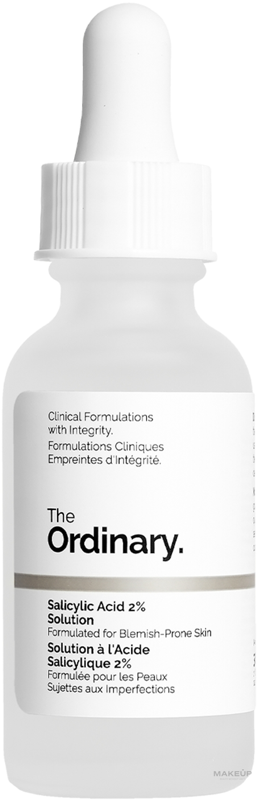

Typ pleti: Všetky typy pleti, vrátane citlivej a suchej.
Účinok: Jemne exfoliuje, vyhladzuje textúru pleti, okamžite hydratuje a rozjasňuje mdlý tón.
Hlavné zložky: 30 % kvasnicový ferment (Saccharomyces), skvalán a technológia kvasnicových fermentov.
Použitie: Naneste ráno a večer na vyčistenú tvár pomocou vatového tampónu alebo dlaní pred aplikáciou sér.
Textúra: Ľahká, mliečna vodová konzistencia, ktorá sa rýchlo vstrebáva.